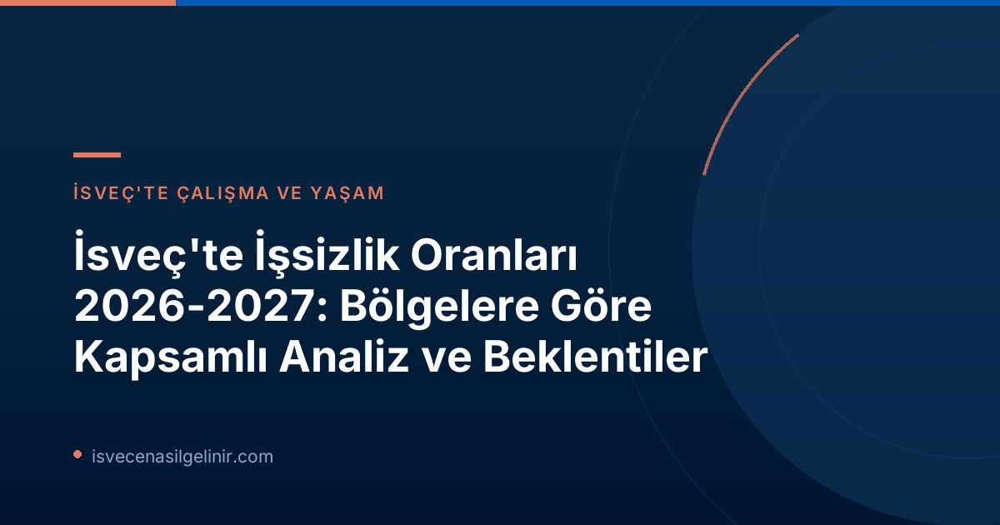

İsveç'te İşsizlik Oranlarındaki Son Durum ve Genel Eğilimler
Arbetsförmedlingen'in 'Regionala utsikter' raporuna göre, İsveç ekonomisinin güçlenmesiyle birlikte işsizlik oranlarında genel bir düşüş yaşanmış olsa da, bu toparlanma bahar aylarında bir miktar yavaşlama göstermiştir. Ülke genelindeki çoğu ilin yıl içinde durgunluk öncesi işsizlik seviyelerine ulaşması beklenirken, başkent Stockholm ve Västra Götaland gibi büyük bölgelerin bu seviyelere ancak 2027 yılında ulaşabileceği tahmin edilmektedir.
Bu genel tabloya rağmen, bölgesel farklılıklar devam etmekte ve hatta bazı alanlarda belirginleşmektedir. Rapor, işsizliğin yaygın olarak azalmasına rağmen iller arasındaki makasın kapanmadığını, aksine mevcut eşitsizliklerin süreceğini vurgulamaktadır.
Bölgelere Göre İşsizlik Beklentileri: Ayrıntılı Bir Bakış
İsveç işgücü piyasası, coğrafi konumu ve ekonomik yapısı nedeniyle iller arasında önemli farklılıklar göstermektedir. Arbetsförmedlingen raporu, bu farklılıkları net bir şekilde ortaya koyarak iş arayanlara ve işverenlere yol göstermektedir. İşte bölgelere göre işsizlik oranları ve beklentileri:
İlçelere Göre İşsizlik Beklentileri (2026-2027)
En Yüksek İşsizlik Oranlarına Sahip ve Sahip Olmaya Devam Edecek İlçeler:
- Skåne
- Västmanland
- Södermanland
- Gävleborg
En Düşük İşsizlik Oranlarına Sahip ve Sahip Olmaya Devam Edecek İlçeler:
- Norrbotten
- Gotland
- Jämtland
- Västerbotten
2026 Yılında İşsizlikte En Büyük Azalmayı Görecek İlçeler:
- Västerbotten (Yeşil sanayi ve savunma yatırımları ile göç etkisi)
- Blekinge (Yeşil sanayi ve savunma yatırımları ile göç etkisi)
Arbetsförmedlingen Analiz Şefi Vekili Lars Lindvall, yaptığı açıklamada Skåne'deki işsizlik oranının Norrbotten'e göre iki katından fazla olduğunu belirtmiştir. Bu durum, iş arayanların rekabetin daha az olduğu ve iş fırsatlarının daha fazla olduğu bölgelere yönelmesinin önemini ortaya koymaktadır.
İşgücü Piyasasındaki Temel Zorluklar: Beceri Uyuşmazlığı ve Nüfus Değişimi
Rapor, İsveç işgücü piyasasında süregelen iki temel soruna dikkat çekmektedir: İşverenlerin doğru niteliklere sahip eleman bulmakta zorlanması ve birçok iş arayanın talep edilen becerilerden yoksun olması. Ekonomi güçlendikçe bu "beceri uyuşmazlığı" (matchningsproblem) sorununun daha da artabileceği öngörülmektedir.
Ayrıca, son yıllarda her üç ilden birinde çalışma çağındaki nüfusun azalması, yeterli niteliklere sahip işgücü açığını daha da derinleştirme riski taşımaktadır. Bu durum, İsveç'in uzun vadede ekonomik büyümesini sürdürebilmesi için ciddi stratejiler geliştirmesi gerektiğini göstermektedir.
Arbetsförmedlingen'den Çözüm Önerileri ve Gelecek Adımlar
Arbetsförmedlingen, işgücü piyasasındaki mevcut zorlukların üstesinden gelmek için çeşitli çözüm yolları önermektedir. Lars Lindvall'ın da vurguladığı gibi:
- Daha fazla iş arayanın, örneğin eğitim yoluyla, işverenlerin talep ettiği becerileri kazanması elzemdir.
- Aynı zamanda, işgücü piyasasından daha uzak konumda olan kişilere kapılarını açacak daha fazla işverene ihtiyaç vardır.
Bu adımlar atıldığında, daha fazla kadronun doldurulabileceği ve daha çok kişinin iş sahibi olabileceği belirtilmektedir. Rapor, Arbetsförmedlingen'in istihdam piyasası analizlerinin önemli bir parçasını oluşturan 'Regionala utsikter' (Bölgesel Beklentiler) serisinin bir parçasıdır ve yılda iki kez (Haziran ve Aralık) yayımlanmaktadır. Ülke genelindeki derinlemesine analizler için 'Arbetsmarknadsutsikterna våren 2026' raporuna da başvurulabilir.
İsveç'te yaşamak ve çalışmak isteyenler için, ülkenin kültürü, dili ve yasal süreçleri hakkında bilgi sahibi olmak kritik öneme sahiptir. Özellikle İsveç Vatandaşlık Sınavı gibi konular, entegrasyon sürecinin önemli bir parçasıdır.
İş Arayanlar İçin Pratik Tavsiyeler
Bu raporun ışığında, İsveç'te iş arayanların dikkate alması gereken bazı pratik tavsiyeler şunlardır:
- Bölgesel Farklılıkları Göz Önünde Bulundurun: Yüksek işsizlik oranlarına sahip bölgeler yerine, Västerbotten, Blekinge gibi azalma beklenen veya Norrbotten, Gotland gibi düşük işsizlik oranlarına sahip illeri değerlendirin.
- Beceri Gelişimi İçin Eğitimlere Katılın: İşverenlerin en çok talep ettiği sektörlerde (özellikle yeşil sanayi ve yüksek teknoloji) becerilerinizi güncelleyin ve ilgili eğitimlere katılın.
- Ağ Oluşturma (Networking): İsveç işgücü piyasasında networking oldukça önemlidir. Sektörel etkinliklere katılın, LinkedIn gibi platformları aktif kullanın.
- İsveççe Dil Bilgisi: Rapor doğrudan bahsetmese de, İsveççe dil bilgisi iş bulma şansınızı önemli ölçüde artıracaktır.
Referanslar:
- Arbetsförmedlingen – Prognos: Så utvecklas arbetslösheten de kommande två åren − län för län
- sverigemedborgarskapsprov.com
İsveç'te Kariyerinize Yön Verin!
İsveç işgücü piyasasındaki güncel gelişmeleri takip ederek kariyerinize en doğru yönü verin. İş arama stratejilerinizi geliştirin ve İsveç'te başarılı bir yaşama adım atın.